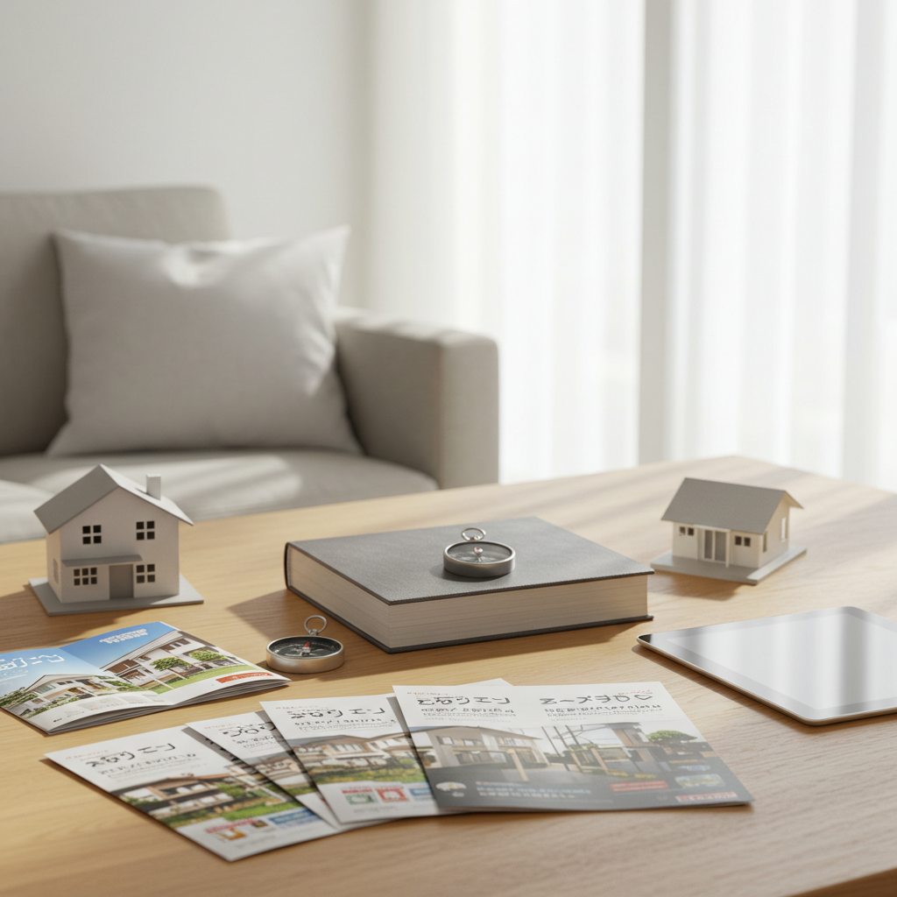
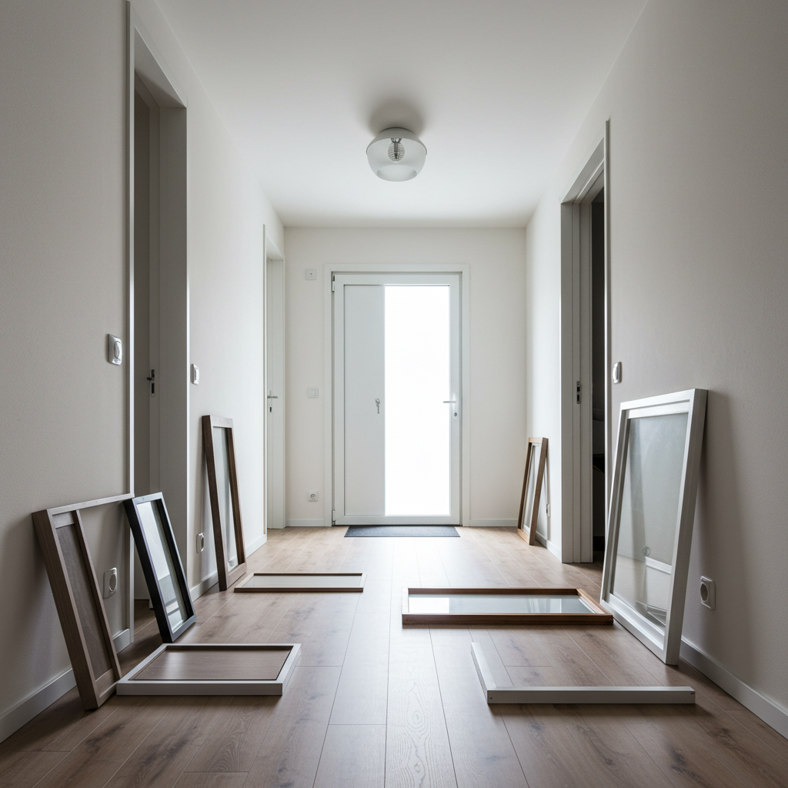
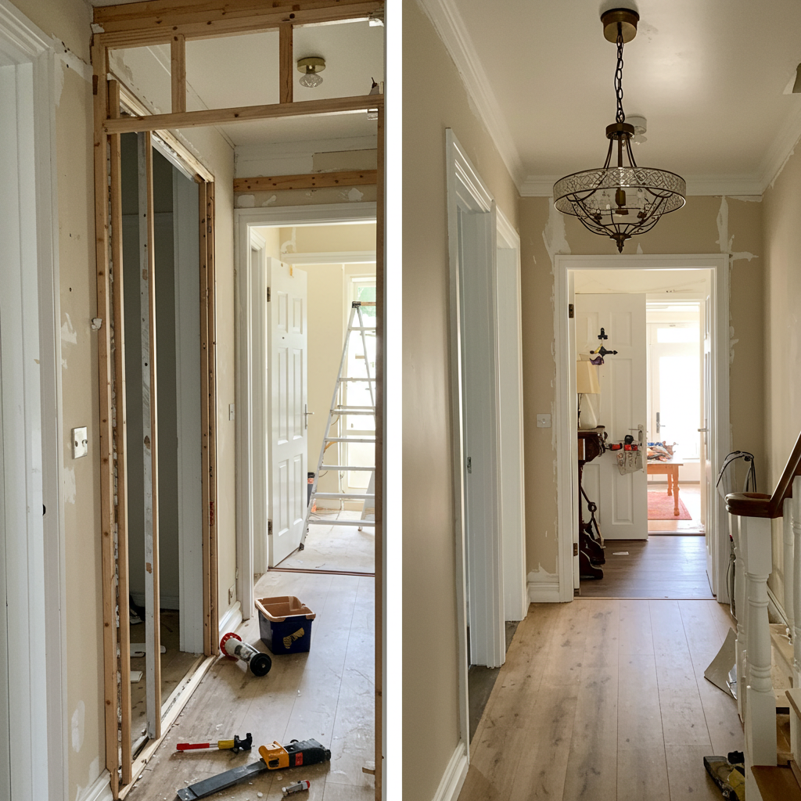
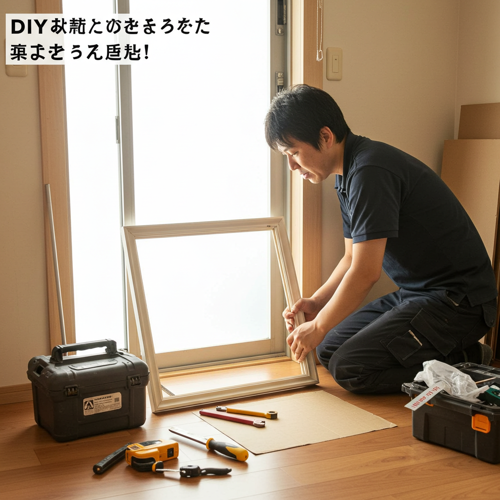
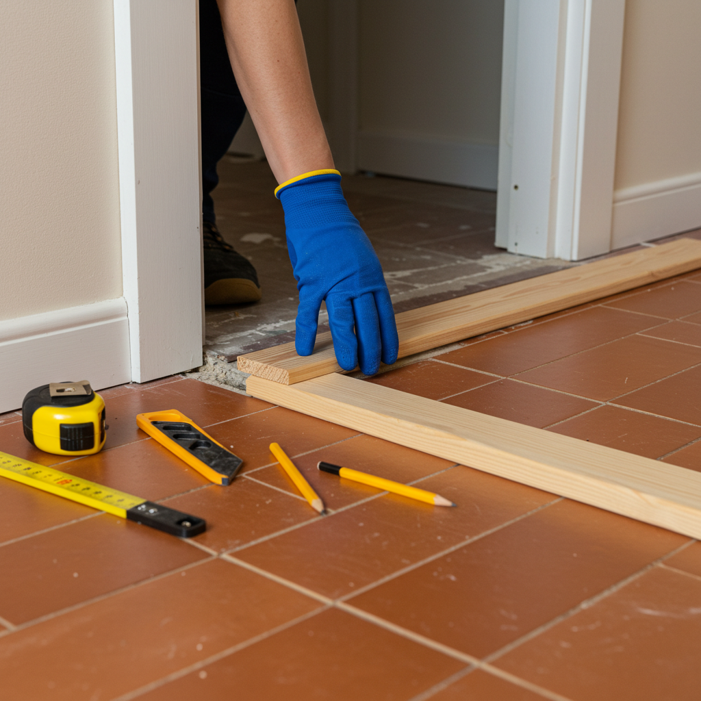
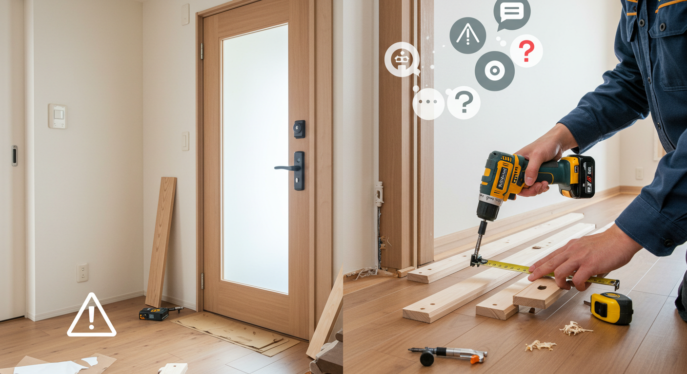
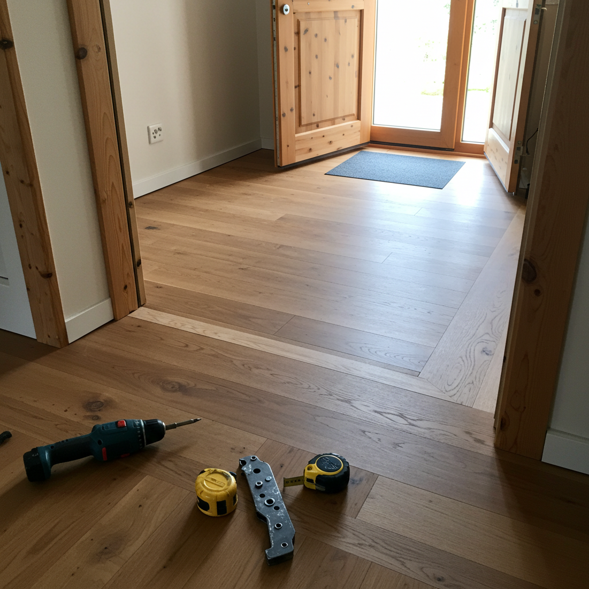

リフォーム框で玄関DIY！選び方から取り付け手順まで徹底解説
導入

毎日「いってきます」と「ただいま」を繰り返す場所、そして大切なお客様を一番最初にお迎えする場所。それが、住まいの顔ともいえる「玄関」です。ふとした瞬間に、玄関の床や框（かまち）の傷や色褪せが気になったことはありませんか？「玄関の印象をもう少し明るくしたいな」「古くなった框を新しくして、気持ちよく毎日をスタートしたい」。そう感じてはいても、リフォームとなると費用や手間を考えて、つい後回しにしてしまいがちかもしれません。
しかし、もしその願いを「DIY」で、しかも比較的リーズナブルに叶えられるとしたら、いかがでしょうか。
この記事でご紹介するのは、「リフォーム框」を使った玄関のDIYです。リフォーム框は、既存の框の上に被せるだけで、まるで新品のように玄関の雰囲気を一新できる優れもの。大掛かりな工事は不要で、DIY初心者の方でも挑戦しやすいのが大きな魅力です。
この記事では、リフォーム框とは一体どのようなものなのかという基礎知識から、ご自宅にぴったりの製品を選ぶための具体的なポイント、そして実際の取り付け手順まで、一つひとつ丁寧に、そして詳しく解説していきます。DIYならではのメリット・デメリット、作業中に困ったときの対処法や、長く美しく保つためのメンテナンス方法まで、あなたがリフォーム框DIYを成功させるために必要な情報を余すところなく詰め込みました。
「自分にできるだろうか」という不安な気持ちが、「これならできるかもしれない」という期待に変わり、そして「やってみたい！」というワクワクに変わる。そんな風に、あなたの背中をそっと押せるようなガイドブックとなれば幸いです。さあ、一緒に理想の玄関作りへの第一歩を踏み出してみませんか？世界にひとつだけの、あなただけの素敵な玄関を、その手で作り上げていきましょう。
リフォーム框とは？DIYで玄関を刷新する基礎知識
DIYで玄関を美しく生まれ変わらせるための強力なアイテム、「リフォーム框」。しかし、そもそも「框」とは何なのか、リフォーム框にはどのような役割があるのか、よく知らないという方も多いかもしれません。まずは、DIYを始める前に知っておきたい基礎知識を、ゆっくりと紐解いていきましょう。
1．框（かまち）とは？玄関の顔となる重要な部分
「框（かまち）」という言葉を初めて耳にした方もいらっしゃるかもしれませんね。框とは、玄関の土間（靴を脱ぐコンクリートやタイルの部分）と、廊下やホールといった室内の床との段差部分に取り付けられている横長の化粧材のことを指します。靴を脱いで家に上がる、その一段目に足をかける部分、と言えばイメージしやすいでしょうか。
この框は、単なる段差の縁取りではありません。実は、私たちの住まいにおいて、とても重要な役割を担っています。
框の主な役割
- 境界線としての役割：框は、屋外の汚れを持ち込む土間と、清潔に保ちたい室内とを明確に分ける「境界線」の役割を果たしています。この一本のラインがあることで、私たちは無意識のうちに「ここからが家の中」と認識し、靴を脱ぐという行動を自然に行うことができるのです。空間にメリハリを与え、心理的な区切りを生み出す大切な存在です。
- 構造的な役割：框は、床材の断面を隠し、保護する役割も持っています。フローリングなどの床材は、その側面（木口）がむき出しになっていると、湿気や衝撃によって傷みやすくなります。框がこのデリケートな部分をしっかりと覆うことで、床材の耐久性を高め、美観を長く保つことに貢献しているのです。また、段差部分の角は人が頻繁に足をかけたり、荷物を置いたりするため、特に強度が必要です。框は、この部分を補強し、安全性を確保するという重要な役目も担っています。
- デザイン的な役割：そして、框は玄関全体のデザインを引き締めるアクセントとしての役割も忘れてはなりません。床材や壁、ドアなどと色や素材を合わせることで統一感のある空間を演出したり、あえて異なる素材や色を選ぶことで個性的なアクセントにしたりと、玄関の印象を大きく左右するデザイン要素なのです。木目の美しい框は温かみを、石材調の框は重厚感を、といったように、框一つで玄関のグレード感や雰囲気をコントロールすることができます。
このように、框は機能性、安全性、そしてデザイン性という三つの側面から、玄関という空間を支える縁の下の力持ちであり、まさに「玄関の顔」を構成する重要なパーツなのです。毎日何気なく目にし、足を踏み入れているこの部分に少し注目してみるだけで、住まいへの愛着がさらに深まるかもしれません。
2．リフォーム框の役割とDIYで選ばれる理由
古くなった框を新しくしたいと考えたとき、従来の方法では、既存の框を解体・撤去し、新しい框を取り付けるという大掛かりな工事が必要でした。これには専門的な技術と時間、そして相応の費用がかかります。しかし、「リフォーム框」は、この常識を覆す画期的なアイテムです。
リフォーム框とは、その名の通り「リフォーム」に特化して作られた框のこと。最大の特徴は、既存の古い框の上に「被せて」取り付けるという点にあります。古い框を撤去する必要がないため、解体に伴う騒音やホコリ、廃材の発生を最小限に抑え、短時間で施工を完了させることができます。
リフォーム框がDIYで選ばれる理由
この「被せ工法（カバー工法）」という手軽さが、リフォーム框がDIY愛好家から絶大な支持を得ている最大の理由です。具体的に、なぜDIYに適しているのか、その魅力を詳しく見ていきましょう。
- 工事の手間と時間を大幅に削減できる：最大のメリットは、やはり施工の手軽さです。既存の框を解体する作業は、バールなどを使って力任せに剥がす必要があり、周囲の壁や床を傷つけてしまうリスクも伴います。また、撤去した後の下地処理も大変です。リフォーム框なら、これらの複雑な工程をすべて省略できます。必要な作業は、既存の框のサイズを測り、リフォーム框をそれに合わせてカットし、接着剤で貼り付けるだけ。これにより、作業時間は劇的に短縮され、週末の1日、あるいは半日程度で玄関の印象をガラリと変えることも夢ではありません。
- 専門的な工具が少なく済む：解体作業が不要なため、バールやハンマーといった大掛かりな工具は必要ありません。基本的な工具（メジャー、のこぎり、接着剤を塗るためのヘラなど）があれば施工が可能です。特に、最近ではDIY向けにカットサービスを提供しているホームセンターやオンラインストアも増えているため、のこぎりでの切断作業に自信がない方でも安心して挑戦できます。
- 費用を抑えられる：プロに框の交換を依頼した場合、材料費に加えて、解体・撤去費用、下地処理費用、施工費、廃材処分費など、さまざまな費用が発生します。リフォーム框をDIYで施工すれば、必要となるのはリフォーム框本体の材料費と、接着剤や両面テープなどの副資材費、そして必要に応じて購入する工具代のみ。人件費がかからない分、トータルの費用を大幅に抑えることが可能です。浮いた予算で、玄関の照明を変えたり、新しいマットを購入したりと、さらなるインテリアのグレードアップを考える楽しみも生まれます。
- 豊富なデザインから選べる：リフォーム框は、各建材メーカーから多種多様な製品が販売されています。天然木の風合いを楽しめるもの、傷や汚れに強いシート仕上げのもの、モダンな石目調のものなど、デザインやカラーバリエーションが非常に豊富です。ご自宅のフローリングの色に合わせたり、玄関ドアの色とコーディネートしたりと、まるで洋服を選ぶように、自分の好みや理想のインテリアに合わせて自由に選ぶことができます。
このように、リフォーム框は「手軽さ」「低コスト」「豊富な選択肢」という、DIYに求められる要素を高いレベルで満たしています。少しの勇気と準備さえあれば、誰でもプロ顔負けの美しい仕上がりを目指せる。これこそが、リフォーム框が多くの人々に選ばれる理由なのです。
3．DIYでできる？リフォーム框の施工難易度
「DIYに適しているのはわかったけれど、本当に自分にもできるのだろうか？」――そう思われる方も少なくないでしょう。結論から言うと、リフォーム框のDIYは、「中級者向け」に位置づけられることが多いですが、「初心者でも十分に挑戦可能」なレベルです。
ただし、いくつかの重要なポイントをクリアする必要があります。そのポイントとは、「正確な採寸」と「丁寧な切断」です。
難易度を左右するポイント
- 採寸の正確さ：リフォーム框は既存の框にぴったりと被せる必要があるため、採寸の精度が仕上がりの美しさを直接左右します。長さはもちろん、幅や高さ、そして壁際の角度などを、ミリ単位で正確に測ることが求められます。特に、玄関の角が完全に90度（直角）でない場合も多いため、角度を測るための「自由金（じゆうがね）」などの道具があると、より正確な作業ができます。採寸を焦らず、複数回測って確認するくらいの慎重さが成功の鍵となります。
- 切断の精度：採寸した寸法通りに、リフォーム框をまっすぐ、そして正確な角度で切断する技術も重要です。手動ののこぎりでも可能ですが、慣れていないと切り口が曲がってしまったり、ささくれてしまったりすることがあります。もし、電動工具の「丸ノコ」や「スライド丸ノコ」があれば、より簡単かつ綺麗に切断することができます。これらの工具がない場合や、切断に自信がない場合は、前述の通り、ホームセンターなどのカットサービスを利用するのが最も確実で安心な方法です。購入時に図面や寸法を伝えれば、プロが正確にカットしてくれます。
総合的な難易度評価
これらのポイントを踏まえると、リフォーム框のDIYは「プラモデルを説明書通りにきれいに組み立てる」感覚に近いかもしれません。一つひとつの工程は決して複雑ではありませんが、丁寧さと正確さが求められます。
- DIY初心者の方へ：もしあなたがDIYに初めて挑戦するのであれば、まずはカットサービスを利用することをおすすめします。最も難しい工程をプロに任せることで、失敗のリスクを大幅に減らすことができます。採寸に集中し、あとは接着剤で貼り付ける作業に専念すれば、美しい仕上がりを実現できる可能性はぐっと高まります。
- DIY経験者の方へ：木材のカット経験がある方や、電動工具の扱いに慣れている方であれば、それほど難しい作業ではないでしょう。むしろ、自分の手で測り、切り、ぴったりと収まったときの達成感は格別です。留め切り（45度での切断）など、少し高度な技術に挑戦してみるのも良い経験になります。
総じて、リフォーム框のDIYは、適切な準備と丁寧な作業を心掛ければ、決して乗り越えられない壁ではありません。むしろ、自分の手で家の顔である玄関を美しく蘇らせるという、大きな喜びと満足感を得られる、非常にやりがいのあるDIYだと言えるでしょう。
リフォーム框の選び方

リフォーム框DIYを成功させるための第一歩は、ご自宅の玄関に最適な製品を選ぶことです。一口にリフォーム框といっても、その厚み、素材、デザインは多種多様。どれを選べば良いのか迷ってしまうかもしれません。ここでは、後悔しないリフォーム框選びのために、押さえておくべき4つのポイントを詳しく解説します。
選び方１．厚みで選ぶ
リフォーム框は既存の框に被せて設置するため、その「厚み」が非常に重要な選択基準となります。厚みによって、仕上がりの見た目や施工のしやすさが変わってきます。
厚みの種類と特徴
リフォーム框の厚みは、主に以下の2種類に大別されます。
- 薄型タイプ（例：1.5mm〜3mm厚）
- 特徴：非常に薄く、柔軟性があるのが特徴です。主に、既存の框の上に薄いシートや単板（天然木を薄くスライスしたもの）を貼るようなイメージです。
- メリット：最大のメリットは、仕上がり後の段差がほとんど気にならないことです。框の高さがほとんど変わらないため、隣接する廊下の床や、玄関ドア下の隙間（アンダーカット）との干渉を心配する必要がほとんどありません。また、薄い分、カッターナイフで切断できる製品もあり、施工が非常に手軽です。
- デメリット：薄いため、下地となる既存の框の凹凸や傷を拾いやすいというデメリットがあります。下地が平滑でないと、仕上がりが波打って見えたり、浮きが出てしまったりすることがあります。そのため、施工前の丁寧な下地処理（パテ埋めなど）が重要になります。また、厚みがない分、重厚感や高級感といった点では厚型タイプに劣る場合があります。
- こんな方におすすめ：
- とにかく手軽にDIYを始めたい方
- 玄関ドアと床の隙間が狭く、厚みが出ると困る方
- 既存の框の状態が比較的良好な方
- 厚型タイプ（例：6mm〜15mm厚）
- 特徴：合板などを基材とし、その表面に化粧シートや天然木の単板を貼って作られています。しっかりとした厚みと硬さがあり、製品としての安定感が高いのが特徴です。
- メリット：厚みがあるため、下地となる既存の框の多少の傷や凹凸ならカバーしてしまい、平滑で美しい仕上がりになります。また、しっかりとした厚みが重厚感と高級感を演出し、玄関全体のグレードを格段にアップさせてくれます。耐久性も高く、人が頻繁に乗る場所でも安心して使用できます。
- デメリット：既存の框よりも高さが出るため、注意が必要です。例えば、6mm厚のリフォーム框を設置すると、床の高さが6mm上がることになります。これにより、隣接する廊下の床との間に新たな段差が生まれたり、玄関ドアの開閉時にドアの下部が框に擦ってしまう可能性が出てきます。事前に、ドア下や周辺の床とのクリアランス（隙間）を正確に測定しておく必要があります。また、切断にはのこぎりや電動工具が必須となります。
- こんな方におすすめ：
- 仕上がりの美しさや高級感を重視する方
- 既存の框の傷や劣化が激しい方
- のこぎりや電動工具の扱いに慣れている、またはカットサービスを利用する予定の方
厚み選びのチェックポイント
どちらのタイプを選ぶか決めるために、以下の点を確認しましょう。
- 既存の框の状態：大きな傷や凹み、歪みはありませんか？状態が悪ければ、それをカバーできる厚型タイプがおすすめです。
- 玄関ドア下の隙間：メジャーや定規をドアの下に差し込み、床との隙間が何ミリあるか測ります。この隙間よりも薄いリフォーム框を選ぶ必要があります。
- 隣接する床との関係：框の高さが変わることで、廊下との間に不自然な段差が生まれないか、敷居などとの取り合いは問題ないかを確認します。
これらの点を総合的に判断し、ご自宅の状況に最適な厚みのリフォーム框を選びましょう。
選び方２．素材で選ぶ
リフォーム框の表面に使われる素材は、見た目の印象だけでなく、耐久性やメンテナンス性にも大きく影響します。主な素材は「シート材」「突板（つきいた）材」「無垢材」の3種類です。それぞれの特徴を理解し、ライフスタイルや好みに合わせて選びましょう。
シート材（化粧シート仕上げ）
- 特徴：合板などの基材の表面に、木目や石目などを印刷した樹脂製や紙製のシートを貼り付けたものです。現在、最も主流なタイプと言えるでしょう。
- メリット：
- 耐久性が高い：表面がコーティングされているため、傷や汚れ、水分に非常に強いのが特徴です。靴で擦ったり、濡れた傘を置いたりしても、変色や劣化がしにくく、日常的なお手入れは水拭きだけで済むなど、メンテナンスが非常に楽です。
- デザインが豊富：印刷技術の向上により、本物の木材と見分けがつかないほどリアルな木目や、大理石のような高級感のある石目、コンクリート調のモダンなデザインなど、バリエーションが非常に豊富です。
- 品質が安定している：工業製品であるため、色ムラや柄のばらつきが少なく、どの部分を使っても均一な仕上がりになります。
- 比較的安価：天然木を使用したものに比べて、価格が手頃な製品が多いのも魅力です。
- デメリット：
- 質感の限界：どれだけリアルになっても、触れたときの質感や温かみは、やはり天然木には及びません。
- 補修が難しい：深い傷がついて表面のシートが剥がれてしまうと、部分的な補修が難しく、傷が目立ちやすくなることがあります。
- こんな方におすすめ：
- 小さなお子様やペットがいて、傷や汚れが気になる方
- メンテナンスの手間をできるだけ省きたい方
- コストを抑えつつ、豊富なデザインから選びたい方
突板（つきいた）材
- 特徴：合板などの基材の表面に、天然木を0.2mm〜0.6mm程度に薄くスライスした「突板」を貼り付けたものです。
- メリット：
- 天然木の美しい風合い：表面は本物の木材なので、木ならではの自然な木目や色合い、美しい光沢を楽しむことができます。シート材にはない、本物の質感が玄関に温かみと高級感を与えてくれます。
- コストパフォーマンス：無垢材を丸ごと使うよりも材料費を抑えられるため、比較的リーズナブルな価格で天然木の風合いを楽しめる、コストパフォーマンスに優れた素材です。
- 反りや割れが少ない：基材が安定した合板であるため、温度や湿度の変化による木の伸縮が少なく、無垢材に比べて反りや割れが起きにくいという利点があります。
- デメリット：
- 傷への注意が必要：表面は薄い天然木なので、硬いものを落としたりすると傷がついたり、凹んだりすることがあります。深い傷がつくと、下の基材が見えてしまう可能性もあります。
- 表面塗装によるメンテナンス性の違い：表面の塗装（ウレタン塗装、オイル塗装など）によってメンテナンス方法が異なります。ウレタン塗装は傷や汚れに強いですが、一度傷がつくと補修が難しいです。オイル塗装は傷がついても補修しやすいですが、定期的なオイルの塗り直しが必要です。
- こんな方におすすめ：
- コストは抑えたいけれど、本物の木の質感を大切にしたい方
- 木の温もりがある、ナチュラルな雰囲気の玄関にしたい方
- 物を丁寧に扱う自信がある方
無垢材
- 特徴：合板などを使わず、一本の木から削り出した天然木そのものの框です。リフォーム框としては製品数が少ないですが、こだわり派の方には選択肢となります。
- メリット：
- 最高の質感と存在感：木本来の質感、香り、温かみは、他の素材では決して味わうことのできない魅力です。重厚感と高級感は圧倒的で、使い込むほどに色合いが深まり、味わいが増していく「経年変化」を楽しむことができます。
- 補修が可能：表面に傷がついても、サンドペーパーで削って再塗装することで、ある程度まで修復が可能です。長く愛着を持って使い続けることができます。
- デメリット：
- 高価である：希少な木材を使用するため、価格は最も高くなります。
- デリケートでメンテナンスが必要：天然木は湿度の変化によって膨張・収縮するため、反りや割れ、隙間が生じることがあります。また、水分や汚れに弱く、シミになりやすいため、こまめな手入れや定期的な塗装メンテナンスが必要です。
- DIYでの扱いの難しさ：硬い木材の切断や加工には、専門的な工具と技術が求められます。
- こんな方におすすめ：
- 素材に徹底的にこだわり、本物志向の方
- 経年変化を楽しみながら、長く大切に住まいを育てていきたい方
- メンテナンスの手間を惜しまない方
それぞれの素材のメリット・デメリットをよく比較検討し、ご自身の価値観に合ったものを選んでください。
選び方３．デザインと色で選ぶ
リフォーム框は玄関の印象を決定づける重要なデザイン要素です。床や建具との調和を考えながら、理想の空間をイメージして選びましょう。
色選びの基本セオリー
色選びに迷ったときは、以下の3つのパターンを参考にすると、失敗が少なくなります。
- 床（フローリング）の色に合わせる：最も簡単で、統一感のある空間に仕上がる王道のパターンです。框と床が一体化して見えるため、玄関ホールが広く、すっきりとした印象になります。多くの建材メーカーは、自社のフローリング製品と同じ色柄のリフォーム框を用意しているので、セットで選ぶと間違いありません。もしフローリングのメーカーや品番がわからなくても、床材のサンプルをホームセンターに持参したり、写真を撮っていったりして、近い色の框を探しましょう。
- 建具（玄関ドア、下駄箱、室内のドアなど）の色に合わせる：床とはあえて違う色を選び、ドアや収納扉の色と合わせる方法です。例えば、明るい色の床に、ダークブラウンのドアと框を組み合わせると、空間全体がキリっと引き締まり、メリハリの効いたモダンな印象になります。この場合、框がアクセントカラーの役割を果たします。
- まったく違うアクセントカラーを選ぶ：床や建具とも違う、まったく新しい色を框に取り入れる、上級者向けのテクニックです。例えば、白を基調とした玄関に、ブラックの框を一本入れると、シャープで洗練された空間になります。ただし、色選びのセンスが問われるため、インテリア雑誌や施工事例などを参考に、全体のカラーバランスをよく考えてから決めることが大切です。
木目やデザインの選び方
色だけでなく、木目のデザインも空間の雰囲気を左右します。
- 板目（いため）：木を年輪の接線方向に切ったときに見られる、山形や筍のような不規則で力強い模様です。木材らしい自然な表情が豊かで、ナチュラルな雰囲気を演出します。
- 柾目（まさめ）：木を年輪に対して垂直に、中心に向かって切ったときに見られる、平行でまっすぐな縞模様です。すっきりと整然とした印象で、上品で落ち着いた空間や、モダンな和の空間によく合います。
また、木目調以外にも、大理石などの石目調のデザインもあります。石目調の框は、玄関の土間がタイルやモルタルの場合に特に相性が良く、高級感あふれるホテルライクな空間を演出できます。
最終チェックは「サンプル」で
カタログやウェブサイトの画面で見る色と、実際の色とでは、光の当たり方などによって印象が異なることがよくあります。可能な限り、メーカーから実物のサンプルを取り寄せたり、ショールームやホームセンターで現物を確認したりすることをおすすめします。小さなサンプル片でも、実際に自宅の玄関に置いて、床や壁との相性を太陽光や照明の下で確認することで、「思っていた色と違った」という失敗を防ぐことができます。
選び方４．メーカーと製品で選ぶ
リフォーム框は、多くの建材メーカーから販売されています。ここでは、代表的なメーカーとその製品シリーズの特徴をいくつかご紹介します。メーカーごとに強みや特色があるので、比較検討の参考にしてください。
- パナソニック（Panasonic）
- 特徴：日本の住宅設備をリードする大手メーカー。フローリング材「ベリティス」や「フィットフロアー」シリーズとコーディネートできるリフォーム框を豊富にラインナップしています。
- 製品例：「リフォーム框（6mm厚/1.5mm厚）」など。同社のフローリングと同じシート材を使用しているため、色合わせが非常に簡単です。高い印刷技術によるリアルな木目柄と、傷や汚れに強い耐久性が魅力。全国のショールームで実物を確認できるのも安心です。
- ノダ（NODA）
- 特徴：フローリングや内装ドアなどを手掛ける老舗の建材メーカー。デザイン性の高い製品が多く、特に天然木の風合いを活かした「アートクチュール」シリーズは人気があります。
- 製品例：「リフォーム框」など。アンティーク調のラスティックデザインや、グレイッシュなトレンドカラーなど、こだわりの空間づくりに応える多彩なバリエーションが揃っています。同社の床材や建具とトータルコーディネートが可能です。
- ウッドワン（WOODONE）
- 特徴：無垢の木にこだわるニュージーランドの建材メーカー。「木」そのものの魅力を最大限に活かした製品づくりが特徴です。
- 製品例：「リフォームタイプ玄関巾木」など。無垢材や突板を使用した製品が多く、本物の木の温もりと質感を求める方におすすめです。ピノアース（パイン材）やオーク、ウォールナットなど、様々な樹種の製品から選べます。
- 東洋テックス（TOYOTEX）
- 特徴：フローリングの専門メーカーとして知られ、コストパフォーマンスに優れた製品を多く提供しています。
- 製品例：「リフォーム框」など。ダイヤモンドフロアーシリーズをはじめとする、光沢感のある美しい床材に合わせたリフォーム框が充実しています。耐久性の高い特殊なコーティング技術に定評があります。
これらのメーカー以外にも、大建工業（DAIKEN）、永大産業（EIDAI）など、多くのメーカーがリフォーム框を販売しています。まずはご自宅のフローリングのメーカーを確認し、同じメーカーの製品から探してみるのが最もスムーズな方法です。もしメーカーが不明な場合は、各社のウェブカタログを見比べながら、理想のイメージに近い製品を探してみましょう。
リフォーム框DIYのメリット

自分の手で住まいを良くしていくDIY。その中でも、リフォーム框のDIYには、他にはない特別な魅力とメリットがあります。費用面だけでなく、時間的な自由や精神的な満足感など、プロに依頼するリフォームでは得られない喜びがそこにはあります。
メリット１．費用を抑えられる
DIYの最大の魅力として多くの人が挙げるのが、やはり「コスト削減」です。リフォーム框のDIYも例外ではなく、プロに依頼する場合と比較して、費用を大幅に抑えることが可能です。
プロに依頼した場合の費用内訳
プロの業者に框の交換を依頼すると、一般的に以下のような費用が発生します。
- 材料費：リフォーム框本体の価格
- 施工費（人件費）：職人さんの作業代
- 既存框の撤去・処分費：（従来工法の場合）古い框を解体し、廃材として処分するための費用
- 下地補修費：撤去した後の下地を整えるための費用
- 諸経費：現場管理費や交通費、利益など
これらの費用を合計すると、玄関のサイズや選ぶ材料にもよりますが、一般的に5万円〜10万円以上かかるケースが多くなります。
DIYの場合の費用内訳
一方、DIYで施工する場合に必要な費用は、非常にシンプルです。
- 材料費：リフォーム框本体の価格（1万円〜3万円程度が主流）
- 副資材費：専用接着剤、両面テープ、コーキング材など（合計で数千円程度）
- 工具代：のこぎりやメジャーなど、持っていない場合に購入する費用
すでに基本的な工具を持っている方であれば、材料費と副資材費を合わせて2万円〜4万円程度で済む計算になります。つまり、プロに依頼するのに比べて、半額以下、場合によっては3分の1程度の費用で、玄関を美しくリフォームできる可能性があるのです。
この「費用を抑えられる」というメリットは、単にお金が浮くというだけではありません。節約できた予算を使って、玄関マットを新調したり、おしゃれな照明器具を取り付けたり、壁紙の一部をアクセントクロスに張り替えたりと、さらなるインテリアのアップグレードに挑戦する「次の楽しみ」へと繋がっていきます。DIYは、限られた予算の中で最大限の満足を得るための、賢い選択肢なのです。
メリット２．自分のペースで施工できる
プロにリフォームを依頼すると、工事の日程は業者のスケジュールに合わせて決める必要があります。平日の日中に作業が行われることが多く、立ち会いのために仕事を休んだり、在宅している必要があったりと、時間的な制約が生まれます。
しかし、DIYであれば、すべての作業を自分の好きなタイミングで、自分のペースで進めることができます。
- 週末を使ってじっくりと：平日は仕事で忙しいという方でも、週末の土日を使って、焦らずじっくりと作業に取り組むことができます。「土曜日に採寸とカットを済ませて、日曜日に接着する」といったように、自分の体力や集中力に合わせて作業を分割することも自由です。
- 思い立ったが吉日：「なんだか玄関が気になるな」と思い立ったその日に、ホームセンターへ材料を買いに行き、その日のうちに作業を始めてしまう、なんてことも可能です。このフットワークの軽さは、DIYならではの特権です。
- 中断も自由自在：作業の途中で疲れてしまったり、急な用事ができてしまったりしても、誰に気兼ねすることなく作業を中断できます。納得がいくまで採寸をやり直したり、接着剤が乾くのをのんびり待ったりと、時間に追われるストレスから解放されます。
この「時間的な自由」は、精神的な余裕にも繋がります。誰かに急かされることなく、一つひとつの工程を自分の納得のいくまで丁寧に行うことができる。この丁寧な手仕事の積み重ねが、最終的な仕上がりの美しさと、完成したときの大きな満足感を生み出すのです。自分の暮らしの時間を大切にしながら、住まいを育てていく。そんな豊かなライフスタイルを、DIYは実現してくれます。
メリット３．達成感と愛着が生まれる
費用や時間のメリット以上に、DIYがもたらしてくれる最も大きな報酬は、「自分の手で作り上げた」という計り知れない達成感と、その場所への深い愛着です。
リフォーム框のDIYは、決して簡単な作業ばかりではありません。ミリ単位の正確さが求められる採寸、まっすぐに切るのが難しい切断、そして後戻りのできない接着。それらの課題を一つひとつ自分の頭で考え、自分の手で乗り越えて完成させたとき、ただ「きれいになった」という以上の、特別な感情が湧き上がってくるはずです。
- 成功体験が自信になる：最初は「自分にできるだろうか」と不安だった作業を無事に終え、見違えるように美しくなった玄関を見たときの喜びは、何物にも代えがたいものです。「やればできるんだ」という成功体験は、大きな自信となり、次のDIYへの挑戦意欲や、他のことにも前向きに取り組む活力を与えてくれます。
- 住まいへの愛着が深まる：自分で苦労して取り付けた框は、もはや単なる建材ではありません。そこには、あなたの時間と労力、そして「もっと良くしたい」という想いが込められています。毎日その框を見るたびに、作業したときのことを思い出し、自然と大切にしようという気持ちが芽生えます。家に帰ってくるたびに、自分の手掛けた玄関が出迎えてくれる。その誇らしさと満足感は、日々の暮らしをより豊かで、心温まるものにしてくれるでしょう。
- 家族との思い出になる：もし家族と一緒に作業をすれば、それはかけがえのない思い出になります。夫婦で協力して採寸したり、子どもに簡単な手伝いをしてもらったり。たとえ少し失敗したとしても、「あのとき、ここを曲がっちゃったんだよね」と笑い合える、家族の歴史が刻まれた特別な場所になるのです。
プロに任せれば、完璧で美しい仕上がりを手に入れることができるでしょう。しかし、DIYで得られるこの達成感と愛着は、お金では決して買うことのできない、あなただけの宝物になるのです。
リフォーム框DIYのデメリット

多くの魅力があるリフォーム框のDIYですが、挑戦する前に知っておくべきデメリットや注意点も存在します。良い面だけでなく、難しい面も正直に理解しておくことで、冷静な判断ができ、後悔のないDIYに繋がります。
デメリット１．専門知識や技術が必要な場面も
リフォーム框のDIYは初心者でも挑戦可能ですが、それはあくまで基本的な直線的な框の場合です。玄関の形状によっては、専門的な知識や高度な加工技術が求められる場面が出てきます。
- 複雑な形状への対応：玄関の框がL字型になっている「上がり框」や、角が斜めになっている場合、あるいは曲線を描いている場合などは、単純な切断だけでは対応できません。特に、角の部分を隙間なくぴったりと合わせるための「留め切り（とめぎり）」という45度での切断加工は、専用の工具（スライド丸ノコなど）と正確な技術がなければ、非常に難易度が高くなります。この部分に隙間ができてしまうと、見た目が悪いだけでなく、ゴミが溜まったり、強度が落ちたりする原因にもなります。
- 下地の状態判断：既存の框の上に被せるとはいえ、その下地となる框の状態があまりにも悪い場合は、DIYでの対応が難しくなります。例えば、シロアリの被害にあっていたり、湿気で木材が腐ってブカブカになっていたりする場合、リフォーム框を被せても根本的な解決にはなりません。それどころか、体重をかけたときに下地ごと踏み抜いてしまう危険性もあります。下地が健全かどうかを判断するには、ある程度の建築知識が必要です。触ってみて明らかに柔らかい、きしむ音がひどいなどの場合は、専門家による診断を検討すべきです。
- 建具との調整：前述の通り、厚みのあるリフォーム框を取り付けたことで、玄関ドアが開かなくなってしまうケースがあります。この場合、ドア本体を削ったり、ドアの蝶番（ちょうつがい）を調整したりといった、建具に関する専門的な作業が必要になる可能性があります。これらの作業は、失敗するとドアの機能そのものを損なう恐れがあるため、DIY初心者にはハードルが高いと言えるでしょう。
これらの専門的な判断や技術が必要な場面に直面したとき、無理に自分で解決しようとすると、かえって状況を悪化させてしまう可能性があります。「少しでも不安を感じたら、専門家に相談する」という冷静な判断力も、DIYを成功させるためには不可欠なスキルです。
デメリット２．失敗時のやり直しや材料費のリスク
DIYには、常に「失敗」のリスクが伴います。特に、一度加工してしまうと元に戻せない材料を扱う場合、そのリスクはより大きくなります。
- 採寸・カットの失敗：リフォーム框のDIYで最も起こりやすい失敗が、採寸ミスやカットミスです。「測った寸法よりも短く切りすぎてしまった」「切断面が曲がってしまい、壁との間に大きな隙間ができた」といった失敗は、誰にでも起こり得ます。リフォーム框は決して安い材料ではありません。一度切断に失敗してしまうと、その材料は使えなくなり、新しく買い直さなければならなくなります。これは、大きな金銭的損失に繋がります。
- 接着の失敗：専用の接着剤は非常に強力なため、一度貼り付けてしまうと、やり直しはほぼ不可能です。もし位置がずれたまま固まってしまったら、無理に剥がそうとすると下地の框やリフォーム框自体を破損させてしまう恐れがあります。接着作業は、まさに一発勝負。そのプレッシャーが、作業の難易度を上げています。
- 仕上がりのクオリティ：たとえ大きな失敗はなくても、細部の仕上がりがプロのようにはいかない、ということも十分に考えられます。コーキングがはみ出してしまった、わずかな隙間が気になる、表面に接着剤がついて汚れてしまった、など。完璧を求めすぎるあまり、完成したのに満足できず、かえってストレスを感じてしまう可能性もゼロではありません。
DIYは、こうした失敗のリスクをすべて自己責任で負う必要があります。失敗しても「これも良い経験」と笑って受け入れられるくらいの心の余裕と、万が一材料を無駄にしてしまっても許容できる予算計画を立てておくことが大切です。
デメリット３．時間と労力が必要になる
「自分のペースでできる」というのはメリットである一方、裏を返せば「すべての時間と労力を自分で捻出しなければならない」ということでもあります。プロに頼めば1日で終わる作業も、DIYでは数日、あるいはそれ以上かかることも珍しくありません。
- 準備段階の手間：DIYは、実際の施工だけでなく、その前の準備にも多くの時間がかかります。どのリフォーム框にするか製品を比較検討し、必要な道具をリストアップして買い揃え、作業手順を調べて頭に入れ、部屋が汚れないように養生をする。こうした地道な準備作業に、想像以上の時間と労力が費やされます。
- 慣れない作業による疲労：普段使い慣れない工具を扱ったり、長時間しゃがんだままの姿勢で作業を続けたりすることは、身体的に大きな負担となります。特に、のこぎりでの手作業による切断は、かなりの腕力と体力を消耗します。作業に夢中になっているときは気づかなくても、翌日になってひどい筋肉痛に悩まされる、ということも十分にあり得ます。
- 後片付けの大変さ：作業が終われば、すべて完了ではありません。木くずやホコリの掃除、使った道具の手入れ、残った材料の整理など、後片付けもすべて自分で行う必要があります。特に木材をカットした後は、細かい木くずが広範囲に飛び散っているため、掃除は思った以上に大変です。
リフォーム框のDIYは、決して「楽して安くできる」魔法のような方法ではありません。時間と労力を惜しまず、一つひとつの工程と丁寧に向き合う覚悟が必要です。貴重な休日をすべてDIYに費やすことになる可能性も考慮した上で、本当に自分にできるか、やり遂げたいかを見極めることが重要です。
リフォーム框の取り付け作業の流れ

いよいよ、リフォーム框DIYのクライマックス、実際の取り付け作業です。ここでは、必要な道具の準備から、下地処理、取り付け、そして美しく仕上げるためのコツまで、一連の流れをステップ・バイ・ステップで詳しく解説していきます。焦らず、一つひとつの工程を丁寧に進めていきましょう。
流れ１．必要な道具と材料の確認
何事も準備が大切です。作業を始めてから「あれがない、これがない」と慌てないように、まずは必要なものをすべてリストアップし、手元に揃えましょう。
【材料】
- リフォーム框：選び方の章を参考に、ご自宅に合ったものを用意します。長さに余裕を持たせて購入しましょう。
- 専用接着剤：リフォーム框の接着には、弾力性があり、衝撃に強い「変成シリコーン樹脂系」や「ウレタン樹脂系」の接着剤が推奨されています。メーカー指定の製品があれば、それを使用するのが最も確実です。
- 強力両面テープ：接着剤が硬化するまでリフォーム框を仮固定するために使用します。厚みのあるクッションタイプがおすすめです。
- コーキング材（コークボンド）：壁と框の隙間や、框のつなぎ目を埋めるために使用します。框や壁の色に近いものを選びましょう。
- マスキングテープ：接着剤やコーキング材がはみ出して周囲を汚さないように、保護するために使います。
- ウエス（きれいな布）：はみ出した接着剤を拭き取ったり、掃除に使ったりします。複数枚あると便利です。
【道具】
- 採寸・墨付け用具
- メジャー（コンベックス）：框の長さを測る必須アイテムです。
- 差し金（さしがね）：直角を確認したり、短い距離を測ったり、切断線を引いたりするのに使います。
- 鉛筆またはシャープペンシル：切断線を引くために使います。
- 自由金（じゆうがね）：任意に角度を固定できる定規。壁の角が直角でない場合に、正確な角度を写し取るのに非常に役立ちます。
- 切断用具
- のこぎり：手動で切る場合の基本道具。木材をまっすぐ切るための「胴付きのこ」や、切断を補助する「ソーガイド」があると精度が上がります。
- 電動丸ノコ / スライド丸ノコ：（あれば）手早く、正確に、そしてきれいに切断できます。特に留め切り（45度カット）を行う際には、角度設定ができるスライド丸ノコが非常に便利です。安全な取り扱いには十分注意してください。
- 接着・仕上げ用具
- コーキングガン：カートリッジタイプの接着剤やコーキング材を押し出すために使います。
- ヘラ：接着剤を均一に塗り広げたり、コーキングをならしたりするのに使います。
- ゴムハンマー：リフォーム框を叩いて圧着する際に使います。当て木をすると框を傷つけません。
- 当て木：ゴムハンマーで叩く際に、框とハンマーの間に挟む板切れ。框を保護します。
- ハタガネやクランプ：（あれば）接着剤が硬化するまで、框を強力に固定しておくことができます。
- その他
- 掃除機、ほうき、ちりとり：下地処理や作業後の清掃に使います。
- カッターナイフ：マスキングテープを切ったり、コーキングのノズルを切ったりするのに使います。
- 保護メガネ、手袋：安全に作業を行うための必須アイテムです。切断時の木くずや、接着剤から目や手を守ります。
これらの道具は、ホームセンターで手に入るものばかりです。一部の電動工具はレンタルサービスを利用するのも賢い方法です。
流れ２．既存の框の確認と下地処理
仕上がりの美しさと耐久性は、この下地処理で決まると言っても過言ではありません。リフォーム框をしっかりと接着させ、長持ちさせるための重要な工程です。
ステップ１：徹底的な清掃
まずは、既存の框とその周辺を徹底的に掃除します。
- ほうきや掃除機で、框の上や隅に溜まったホコリ、砂、髪の毛などを完全に取り除きます。
- 固く絞った濡れ雑巾で、框の表面に付着した泥汚れや皮脂汚れを拭き取ります。汚れがひどい場合は、中性洗剤を薄めた液を使って拭き、その後、水拭きと乾拭きで洗剤成分を完全に取り除きます。
- 最後に、框の表面が完全に乾くまで待ちます。表面に油分や水分、ホコリが残っていると、接着剤の付きが悪くなる原因になります。
ステップ２：下地の状態確認と補修
次に、清掃した既存の框の状態を詳しくチェックします。
- 平滑性の確認：框の表面を手で撫でてみたり、定規を当ててみたりして、大きな凹凸や段差がないか確認します。もし、釘の頭が飛び出ていたり、表面がささくれていたりする場合は、金槌で釘を打ち込んだり、サンドペーパーで表面を滑らかに研磨したりしておきます。
- 傷や凹みの補修：深い傷や凹みがある場合は、木工用のパテを使って埋め、平らにしておきます。特に薄型のリフォーム框を使う場合は、この作業が仕上がりに大きく影響します。パテが完全に乾燥したら、サンドペーパーで周囲と段差がなくなるようにならします。
- 強度の確認：框の上に乗ってみて、きしみや沈み込みがないか確認します。もし、踏んだときにブカブカと動くような箇所があれば、下地が傷んでいる可能性があります。この場合はDIYでの施工を中断し、専門家への相談を検討してください。
ステップ３：正確な採寸と墨付け
下地が整ったら、いよいよ採寸です。ここが最も神経を使うポイント。焦らず、慎重に行いましょう。
- 長さの測定：框を取り付ける部分の長さを、壁から壁まで正確に測ります。壁が完全にまっすぐでないことも考慮し、手前側、中央、奥側の3箇所を測り、最も長い寸法を記録しておくと安心です。
- 幅と高さの測定：既存の框の幅（奥行き）と高さを測ります。この寸法が、リフォーム框のどのサイズを選ぶかの基準になります。
- 角度の測定：L字型の框など、角がある場合は、その角度を測ります。自由金を使って壁の角度を正確に写し取り、その角度でリフォーム框をカットする必要があります。
- 墨付け（けがき）：測定した寸法を、リフォーム框の裏面や見えなくなる部分に、鉛筆と差し金を使って正確に書き込みます。この線が切断のガイドラインになります。複数回測り直し、「本当にこの寸法で良いか」を何度も確認しましょう。
流れ３．リフォーム框の取り付け方法
いよいよリフォーム框を形にしていく工程です。切断から接着まで、手順を守って丁寧に進めましょう。
ステップ１：リフォーム框の切断
墨付けした線に沿って、リフォーム框を切断します。
- 手動のこぎりを使う場合：ソーガイドなどを使って、のこぎりがぶれないように固定すると、まっすぐ切りやすくなります。切断する際は、力を入れすぎず、のこぎりの重みで引くように切るのがコツです。切り終わりは材が割れやすいので、特に慎重に作業します。
- 電動工具を使う場合：丸ノコを使う場合は、ガイド定規をしっかりと固定し、一気に切り進めます。スライド丸ノコは、角度切りも正確にできるため、留め切りには最適です。いずれの工具も、キックバック（刃が材に食い込んで跳ね返る現象）などの危険が伴うため、取扱説明書をよく読み、安全を最優先してください。
切断が終わったら、一度、実際に取り付ける場所に仮置きしてみましょう。これを「仮合わせ」と呼びます。長さや角度がぴったり合っているか、壁との間に不自然な隙間がないかを確認します。もし微調整が必要であれば、この段階でサンドペーパーやカンナで削って修正します。
ステップ２：接着剤と両面テープの塗布
仮合わせで問題がなければ、いよいよ接着です。
- マスキング：リフォーム框を取り付ける位置の周囲（壁や床）に、接着剤がはみ出しても汚れないようにマスキングテープを貼っておきます。
- 両面テープの貼り付け：まず、既存の框の上に、強力両面テープを貼ります。間隔は20cm〜30cm程度で、数本貼り付けます。これは、接着剤が硬化するまでの間、リフォーム框がずれないようにするための仮固定の役割を果たします。
- 接着剤の塗布：コーキングガンに接着剤のカートリッジをセットし、両面テープを貼っていないスペースに、接着剤を塗布していきます。塗り方は、波線を描くように（蛇行させて）塗るのが一般的です。端の部分は、はみ出しすぎないように少し内側を意識して塗りましょう。量が少なすぎると接着力が弱まり、多すぎるとはみ出して後処理が大変になるので、適量を心がけます。
ステップ３：圧着と固定
接着剤を塗り終えたら、10分以内など、接着剤の表面が乾き始める前に、素早くリフォーム框を貼り付けます。
- 両面テープの剥離紙をすべて剥がします。
- リフォーム框を、位置がずれないように慎重に、狙いを定めて既存の框の上に置きます。
- 位置が決まったら、手のひらで全体を強く押さえつけ、両面テープをしっかりと圧着させます。
- 次に、当て木をしながらゴムハンマーで、框の全面をまんべんなく、コンコンと軽く叩いていきます。これにより、接着剤が均一に広がり、框全体が下地に密着します。
- もし、ハタガネやクランプがあれば、この段階で框を固定します。ない場合は、上に重し（辞書や水の入ったペットボトルなど）を均等に置いて、一晩（少なくとも24時間）はそのままの状態にして、接着剤が完全に硬化するのを待ちます。この養生期間中は、絶対に框の上に乗らないように注意してください。
流れ４．きれいに仕上げるためのコツ
接着剤が完全に硬化したら、最後の仕上げ作業です。このひと手間で、仕上がりのクオリティが格段にアップします。
ステップ１：マスキングテープの除去
圧着時に框の端からはみ出した接着剤は、硬化する前に、濡らしたウエスやヘラですぐに拭き取っておきます。接着剤が完全に硬化したら、周囲に貼っておいたマスキングテープをゆっくりと剥がします。
ステップ２：コーキング処理
壁とリフォーム框の間や、L字框のつなぎ目などに、わずかな隙間ができてしまうことがあります。この隙間を、コーキング材で埋めていきます。
- 隙間の両脇に、コーキング材がはみ出さないように、再びマスキングテープをきれいに貼ります。このとき、テープのラインが仕上がりのラインになります。
- コーキングガンを使って、隙間に沿って一定の速度でコーキング材を充填していきます。
- 指やヘラを使って、コーキングの表面をなでるようにして、滑らかにならします。指を使う場合は、水で少し濡らしておくと作業しやすくなります。
- コーキングが乾き始める前に、素早くマスキングテープを剥がします。テープは、コーキングを引っ張らないように、角度をつけて手前に引くように剥がすのがコツです。
ステップ３：最終清掃
コーキングが完全に乾いたら、作業で出たホコリやゴミをきれいに掃除して、すべての工程が完了です。見違えるように美しくなった玄関を眺め、達成感を存分に味わってください。
リフォーム框DIYのよくある質問と注意点

DIYには予期せぬトラブルや疑問がつきものです。ここでは、リフォーム框DIYで多くの人がつまずきがちなポイントや、知っておくと役立つ情報について、Q&A形式で解説します。安心して作業を進めるための、そして完成後も長く美しく保つためのヒントが満載です。
1．施工中に困ったら？トラブルシューティング
作業中に「どうしよう！」とパニックにならないために、よくあるトラブルとその対処法を事前に知っておきましょう。
Q1. リフォーム框を短く切りすぎてしまいました。どうすればいいですか？
A1. これはDIYで最も避けたい、しかし起こりがちな失敗です。残念ながら、一度短く切ってしまったものを元に戻すことはできません。
対処法としては、いくつかの選択肢が考えられます。
- 潔く買い直す：最も確実で、仕上がりもきれいな方法です。費用はかかりますが、玄関は毎日目にする場所なので、後々まで後悔することを考えれば、最善の選択と言えるかもしれません。
- 隙間をコーキングで埋める：もし壁との隙間が数ミリ程度であれば、その隙間をコーキング材で埋めてごまかす、という方法もあります。框や壁と同色のコーキングを使えば、それほど目立たずに仕上げることも可能です。ただし、隙間が大きすぎると不自然に見え、コーキングが痩せて（縮んで）後から再び隙間が目立ってくる可能性もあります。
- 端材で見切り材を作る：もし同じ材料の端材があれば、隙間の幅に合わせて細くカットし、「見切り材」のようにして隙間に埋め込むという高度なテクニックもあります。ただし、つなぎ目が目立ちやすいため、加工技術とセンスが問われます。
このような失敗を防ぐためには、「墨付けの線より、ほんの少し（1mm程度）長めに切る」ことを意識するのがおすすめです。長すぎた場合は後からカンナやサンドペーパーで削って微調整できますが、短い場合は修正が効きません。「大は小を兼ねる」の精神で、慎重にカットしましょう。
Q2. 接着剤がはみ出して、框の表面や床についてしまいました。
A2. 接着剤が硬化する前か後かで、対処法が異なります。
- 硬化する前の場合：すぐに、乾いたきれいなウエス（布）で大まかに拭き取ります。その後、少量の中性洗剤や、製品によっては専用のクリーナーを別のウエスに含ませて、残った接着剤を丁寧に拭き取ります。ゴシゴシ擦ると汚れが広がるので、つまみ取るように拭くのがコツです。
- 硬化してしまった場合：完全に固まってしまうと、取り除くのは非常に困難です。無理に剥がそうとすると、表面の化粧シートを傷つけたり、剥がしてしまったりする恐れがあります。カッターの刃などで慎重に削り取る方法もありますが、リスクが非常に高いです。まずは、接着剤のメーカーに問い合わせて、推奨される除去方法（専用の溶剤など）があるか確認してみましょう。
これを防ぐには、事前のマスキングが何よりも重要です。また、接着剤を塗布する際は、端から少し内側を意識して、量を出しすぎないように注意しましょう。
Q3. 仮合わせではピッタリだったのに、接着したら隙間ができてしまいました。
A3. これは、圧着が不十分だったり、接着剤の量が均一でなかったりした場合に起こることがあります。
- 接着剤が硬化する前：まだ接着剤が柔らかいうちであれば、ゴムハンマーと当て木で再度叩いて圧着し直したり、重しを乗せる位置を調整したりすることで、隙間が埋まる可能性があります。
- 接着剤が硬化した後：残念ながら、後から修正するのは困難です。隙間の程度にもよりますが、Q1と同様に、コーキング材で隙間を埋めるのが現実的な対処法となります。
これを防ぐには、接着剤を均一に塗布し、貼り付けた後は、ゴムハンマーで中央から端に向かって、まんべんなく叩いて圧着することが大切です。空気や余分な接着剤を外に押し出すイメージで行いましょう。
2．長持ちさせるためのメンテナンス方法
せっかく自分の手で美しく仕上げた玄関框。できるだけ長く、その美しさを保ちたいものですよね。素材に合わせた適切なお手入れが、長持ちの秘訣です。
日常のお手入れ
- 乾拭きが基本：普段のお手入れは、柔らかい布での乾拭きで十分です。表面のホコリやチリを取り除きましょう。
- 泥汚れなどは水拭きで：雨の日に持ち込まれた泥汚れなどが付着した場合は、固く絞った雑巾で水拭きします。その後、必ず乾いた布で水分を完全に拭き取ってください。水分が残っていると、シミや素材の劣化の原因になります。
- 化学薬品は避ける：シンナーやベンジンなどの溶剤や、酸性・アルカリ性の強い洗剤は、表面のコーティングを傷めたり、変色させたりする原因になるため、絶対に使用しないでください。汚れがひどい場合でも、必ず中性洗剤を薄めて使用し、最後は水拭きと乾拭きで仕上げます。
素材別の注意点
- シート材：最もメンテナンスが楽な素材です。耐久性は高いですが、表面に深い傷がつくと補修が難しいため、家具を引きずったり、硬くて重いものを落としたりしないように注意しましょう。市販のクレヨンタイプの補修材で小さな傷を目立たなくすることも可能です。
- 突板材・無垢材：天然木は水分に非常に弱いため、濡れた傘や靴を長時間置いたままにしないようにしましょう。水滴がついたら、すぐに拭き取る習慣が大切です。表面の塗装の種類によって、メンテナンス方法が異なります。
- ウレタン塗装の場合：表面が硬い塗膜で覆われているため、比較的傷や汚れに強いです。日常のお手入れはシート材と同様で問題ありません。
- オイル塗装の場合：木の質感を活かした塗装ですが、塗膜が薄いため、水分が染み込みやすいです。年に1〜2回程度、専用のメンテナンスオイルを塗り込むことで、撥水性が回復し、木材の乾燥を防ぎ、美しい艶を保つことができます。小さな傷であれば、サンドペーパーで軽く研磨した後にオイルを塗ることで、目立たなくすることも可能です。
適切なメンテナンスは、リフォーム框の寿命を延ばすだけでなく、住まいへの愛着をさらに深めてくれます。
3．DIYでの限界？プロに依頼すべきケース
DIYは素晴らしい経験ですが、どんな状況でも万能というわけではありません。時には、安全や確実性を優先し、プロの手に委ねるという賢明な判断も必要です。以下のようなケースでは、無理にDIYで進めず、専門のリフォーム会社や工務店に相談することをおすすめします。
- 下地に深刻な問題がある場合
- 框を踏むとブカブカと沈む、きしみがひどい。
- シロアリ被害の形跡（木材がスカスカになっている、蟻道があるなど）が見られる。
- 雨漏りや湿気で、木材が腐っている、カビが発生している。
- このような場合は、表面をリフォーム框で覆っても根本的な解決にはならず、構造的な問題に発展する可能性があります。プロによる下地の診断と、必要であれば構造部分からの修繕が必要です。
- 玄関の形状が非常に複雑な場合
- 框が曲線を描いている（R框）。
- 複数の角が組み合わさっており、複雑な角度のカットが必要。
- 式台（玄関の上がり框と床の間に設けられる広い板）と一体になっている。
- このような特殊な形状は、採寸も加工も非常に難易度が高く、DIYでの対応は困難です。専門的な知識と工具を持つプロでなければ、きれいに収めることはできません。
- 完璧な仕上がりを求める場合
- ミリ単位の隙間も許せない、完璧な仕上がりを望む。
- 高価な材料（無垢材など）を使用するため、絶対に失敗したくない。
- DIYに費やす時間や労力を確保できない。
- このような場合は、精神的な負担や失敗のリスクを考慮すると、最初からプロに依頼する方が結果的に満足度が高くなる可能性があります。プロは、豊富な経験と知識、そして専用の工具を駆使して、迅速かつ美しく仕上げてくれます。
DIYの目的は、単に費用を抑えることだけではありません。そのプロセスを楽しみ、自分の手で作り上げる喜びを味わうことにあります。もし、作業が「楽しい」ではなく「苦痛」に感じられるようなら、それはプロに頼るべきサインかもしれません。自分のスキルや状況を客観的に見極め、無理のない範囲でDIYを楽しむことが、最も大切なことです。
リフォーム框で理想の玄関DIYを実現しよう

この記事を通して、リフォーム框を使った玄関DIYの全貌を、基礎知識から選び方、具体的な施工手順、そして注意点に至るまで、詳しく見てきました。いかがでしたでしょうか。
最初は「框のリフォームなんて、自分には縁のない難しそうなこと」と感じていた方も、今では「これなら自分にもできるかもしれない」という、具体的なイメージと少しの自信が湧いてきているのではないでしょうか。
リフォーム框のDIYは、確かに簡単なことばかりではありません。正確な採寸、慎重なカット、そして後戻りのできない接着作業など、いくつかの乗り越えるべきハードルがあります。しかし、それらの工程一つひとつに丁寧に向き合い、自分の手で乗り越えた先に待っているのは、単に「きれいになった玄関」だけではありません。
そこには、自分の手で住まいを良くしたという、何物にも代えがたい「達成感」。試行錯誤した時間そのものが刻まれた、世界に一つだけの場所への「愛着」。そして、「やればできる」という、これからの暮らしを豊かにしてくれる「自信」が待っています。
毎日、仕事や学校から疲れて帰ってきたとき。あなたを一番に迎えてくれるのは、あなたの想いと努力が詰まった、美しい玄関です。その框に足を踏み入れるたびに、きっと少しだけ誇らしい、温かい気持ちになれるはずです。大切なお客様を招くときも、以前よりずっと自信を持って「どうぞ」と迎え入れることができるでしょう。
さあ、まずはご自宅の玄関をじっくりと眺めてみてください。どんな色にしようか、どんな素材がいいか、理想の空間を自由に想像してみましょう。そのワクワクする気持ちこそが、DIYの原動力です。
この記事が、あなたの「やってみたい」という気持ちを後押しし、理想の玄関づくりを実現するための一助となれたなら、これ以上の喜びはありません。ぜひ、リフォーム框DIYに挑戦して、あなただけの素敵な玄関を手に入れてください。応援しています。